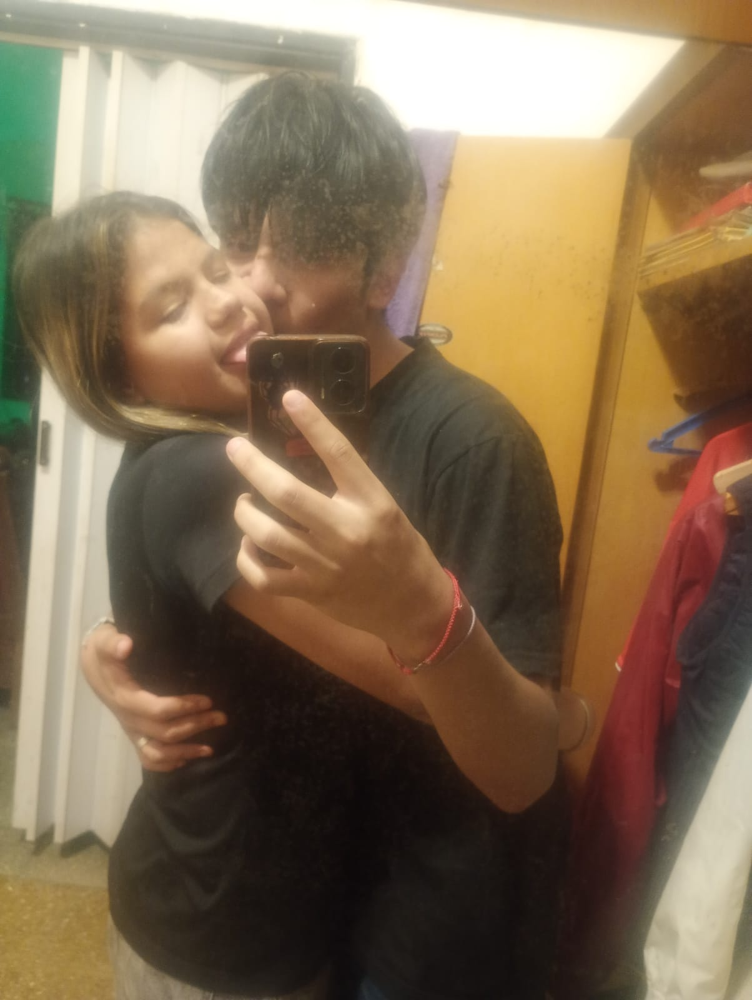

JUNGKOOK
Cuando empeze a hablarte de bts, habia uno que te gusto y era jeong kook(jungkkok), nose como te empezo a gustar pero cada que escucho a bts y escucho la voz de jungkook o escucho una de sus canciones me acuerdo de vos.

amor, se que no me acostumbro a dar regalos de este estilo, pero por vos haria todo lo imposible con tal de que te des cuenta la mujer que sos en mi vida. Hoy 20/11/26 cumplimos un año y tres meses desde que empezamos esta aventura y simplemente me queda decir GRACIAS.
Se que cada rato te digo gracias, pero estoy eternamente agradecido de amarte cada dia, cada hora, cada minuto y cada segundo de mi vida, gracias a vos pude confiar nuevamente en mi mismo y tambien en que las personas de buen corazon, siempre aparecer en nuestras vidas para salvarnos de situacionesde mierda. Tambien no me cansare de decirte "te amo" porque mi amor por vos no tiene una explicacion, ya que por vos haria muchas cosas con tal de verte sonreir y que tu niña interior se sienta protegida y no atormentada por momentos de mierda que pasaste en tu vida💖💖.
Y perdon por si en algun momento cometi un error que te hizo sobrepensar, que te hice sentir que ya no te amaba y tambien de que me iba a alejar de ti, en este tiempo de novios sufrimos bastante por las cosas que pasamos, PERO siempre habia solucion que siempre hicimos y fue hablarlo, por eso estamos en el dia de hoy juntos todavia, porque en el amor de hoy en dia un error minimo y se va todo a la mierda pero nosotros aprendemos de nuestros errores y de una u otra forma lo solucionamos.
Te juro que gracias a vos puedo ser yo mismo sin importar que digan los demas, porque antes yo hacia cosas que me gustaban y como que me miraban raro o me cuestionaban por ek simple hecho de nacer en otra parte y me dolia, pero tu lo cambiaste todo, me devolviste esa confianza de ser yomismo sin importar que diga la gente, porque debo de estar orgulloso de mi mismo y de no rendirme a situaciones complicadas de la vida.
El verde me recuerda a vos porque es tu color favorito y tambien porque lo veo en la mayoria de cosas que me encuentro, como uvas verdes, las plantas, defensa y justicia, mi buzo verde, etc.
Cada que vuelvo a mi casa o cada que paseo con alguien, siempre me encuentro con nenes o nenas chiquitos que me dan ternura y me hacen acordara vos porque me haces carita tierna, me dices que queres uno y que vamos a tener uno asi en un futuro futurozo.
Cuando empeze a hablarte de bts, habia uno que te gusto y era jeong kook(jungkkok), nose como te empezo a gustar pero cada que escucho a bts y escucho la voz de jungkook o escucho una de sus canciones me acuerdo de vos.
No conzoco a nadie en el mundo que le encante cris mj pero llegaste tu y fue distinto, cada reel o cada tiktok que me aparece con relacion a cris mj siempre me hace acordar a vos.

Si no es contigo, amor
Yo no quiero a nadie más
Tú namás tienes lo que a mí me encanta
Gata, aprovechémono
Mamita, casémono
Que no se mal entienda JAJAJSJAJSJAA, porque cada vez que como algo me hace recordar a las alidas que tuvimos y que tambien comimos en esas salidas, por ejemplo cuando mi mama me hace pati, me recuerda cuando comimos hamburguesa en la tienda crca de la escuela o en pancho riqui.
Cada vez que juega boca siempre me hace acordar a vos, porque siempre me escuchas como vivi los partidos, como jugaron los jugadores y mas, tambien de que cuando mete gol boca siempre me mandas mensaje gritando el gol y cuando gana boca tambien me dices que fue un choreo o que lo robaron, y para lo mas importante me hace acordar cuando te regale mi remera de boca con la 7 de zeballos.
Cada vez que mi mama o mi papa pone el canal peruano(america tv), da la rosa de guadalupe y eso me hace acordar a vos, porque varias veces cuando te pregunte que hacias, me decias que viendo eso, o tambien cuando me mandaste un o 2 reels de la rosa de guadalupe.
Cuando estoy en mi casa y veo que juega independiente, me hace acordar a vos ya que llevaste algunas veces la remera de independiente cuando nos vimos o cuando yo te molesto con lo frio que es independiente con su cancha, y tambien porque le ganamos 1 a 0 de visitante recientemente JAJASJJAJSJAJJAS.
Estas las varias cosas que siempre me hacen acordar a vos, se que hay alguna que me estpy olvidando pero se que estas son las mas importantes que puedo recordar, pero definitamente es algo unico que le hice a una persona, gracias a vos hice cosas y logre cosas que nunca me hubiera imaginado o tambien porque me hubiera rendido, me enseñaste a valorarme, a no rendirme e intentar hasta el ultimo y tambien y lo mas importante, como es el amor verdadero, simplemente GRACIAS💖💖💖💖💖💖.
se que hay veces que no puedo ser perfecto, pero yo daria todo de mi con tal de verte feliz, con tal de que logres todo lo que te propongas y tambien de que te apoyaria hasta el ultimo para que no te rindas mi amor, en las relaciones actuales simpre quieren para un rato y ya, pero yo me propongo a que duremos hasta el ultimo dia de nuestras vidas sin importar que situacion o que desafio nos de la vida, no sere adivino para poder saber nuestro futuro, pero mientras nos mantengamos juntos, todo sera posible porque estamos para aprender, enseñar y crecer como persona.

TE AMO UN MONTON MI VIDA Y GRACIAS POR LLEGAR A MI VIDA💖💖💖💖